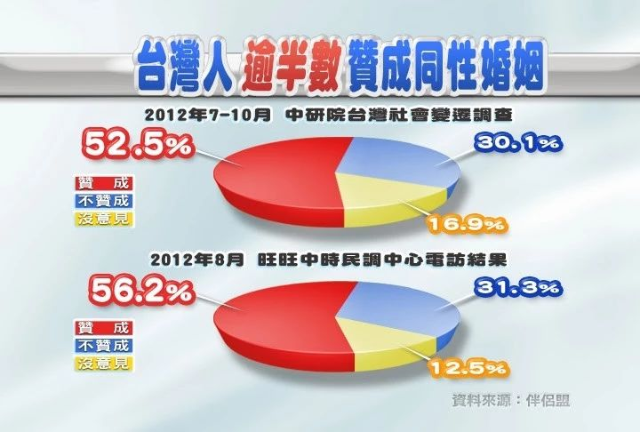
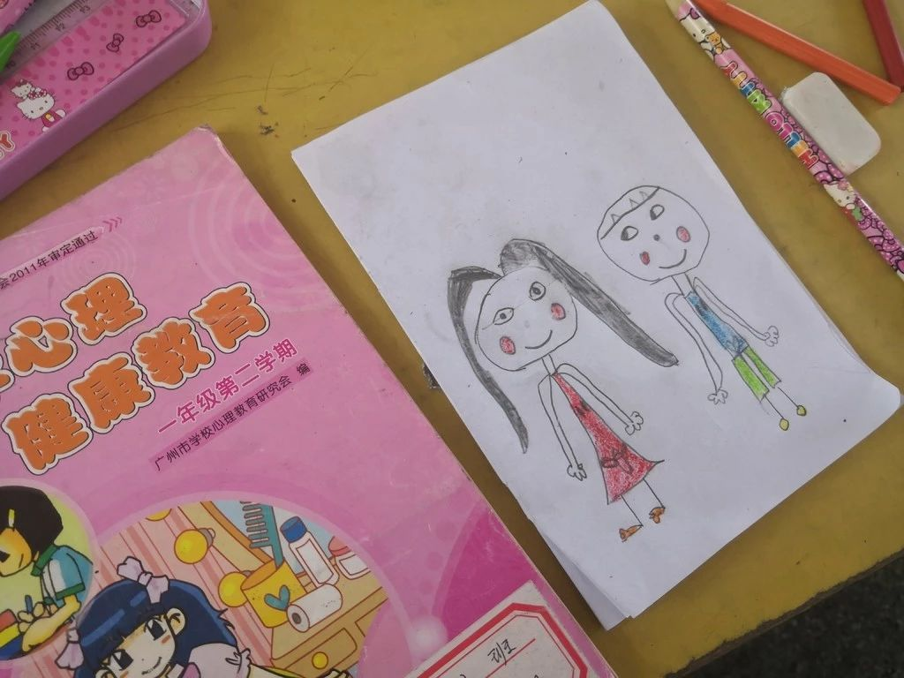
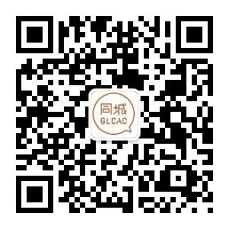

全球性别友善教师：我们的友善，ta们的力量

8月17日，广东省规定9月起，广东省中小学（包括中职）要全面实行性别平等教育！
其实，早在其他国家和地区，10多年前已通过立法将性别平等、同志友善、多元性别纳入到教育中。广东的发文，可谓是历史性的一步呀！这些性别、同志友善的教师们，他们具体为了爱、多元和平等做了什么？又对中国的大家说了什么呢？快来一睹为快把。Ta们为什么而做？教师节到了，Ta们对于国内的教师又有怎样的寄语？
看完视频，你觉得性别教育的意义在哪里？台湾实行了《性别平等教育法》20年，改变了一代又一代年轻人的性别观念。
以上图片来源于互联网，侵删
性别教育，就是教育下一代从价值上了解性别多元，尊重差异，在知识上了解性别议题，在技能上知道如何把性别平等的理念日常化。而老师，作为人才的培养者，可以：
让未来的家长知道：“男生也可以阴柔，女生也可以阳刚”；
让未来教育工作者知道：“擅长什么科目和专业与性别无关”；
让未来的心理咨询师和精神病医生知道“性取向不可以被扭转”；
让未来的执政者知道，单身女性也要生孩子，LGBTQ+的关系需要法律保障......
让未来的领导层知道，女性也可以做管理者；
让未来的公民知道，不一样又怎样？
重要的是，每个人都可以成为真实的自己！
国内性别教育先行者
早在2014年以来，同城青少年资源中心就以培训来建立了国内最大的性别教育师资队伍，鼓励、支持教师开展性别平等和反对性别欺凌的教育。目前，已在广东、云南、湖北、浙江举办10场性别教育师资的培训，覆盖18城市的320余位教师。Ta们是国内在校园里第一批推动性别教育，同志友善的先行者！让我们来看看Ta们做了什么？！
图：第9期教师性别研习营大合照
01
性别课堂融入

2018年，浙江省某中学的语文老师为在课堂渗透性/别议题所设计的教案。
02
性别专题课程
上海某大学的陆老师，连续几年在校内开设核心通识课《爱情心理密码》，内容包含性别多元化、性别平等、性心理的发展。该课程每年有500-800人选修。
2018年5月，广州的陈老师向18名学生介绍传统社会性别、现代多元的社会性别和男女平等的相关知识。
2018年6月，广州的西西老师用不同性别的娃娃为幼儿园的孩子讲解“隐私部位”和“身体界限”的相关内容。

2018年6月，广东的叶老师给6个班的学生上“我来保护我自己”的主题课程，帮助孩子了解自己的身体、破除性别刻板，教孩子学会保护自己。
03
性别校园活动
2018年5月，湖北一位大学老师在学校开展的“爱的信箱”活动，引导学生理解“爱无关性别”的道理。
2018年6月，云南的覃老师开展了以“社会性别与多元性别”为主题的教育工作坊，帮助11位社工学生深入了解社会性别、性别刻板等知识。
2018年6月初，佛山的吴老师组织400名学生阅读绘本《不是我的错》，并引导学生思考性别气质和校园霸凌，不做事不关己的旁观者。
6月底，八年级全体学生在吴老师的心育课《男女大不同》和《多元性别》后进行了“我的性别愿望”作品创作。
2018年5月，武汉某大学的韩老师先后举办了HIV感染者（男同）生命经验分享会和性少数真人图书馆两个活动，共有120名学生参加。
04
教师行业推动
2018年，广佛三位老师与三名同志志愿者向800多名公众直播分享她们如何在学校推动性/别教育和同志学生的真实故事。
2018年5月，浙江省的陈老师，面向100名同区县老师开展以“悦纳自我形象”为主题的公开课，重点谈论多元性别气质和表达。
关于性别平等教育，老师们有话说：
这次活动让我重新审视自己的某些价值观，给了我更大的动力去实践校园欺凌专题活动，也让我这个粗心的人能够有意识去告诉自己：生活中有很多的细节可以结合性别视角，性别与我们的生活是息息相关的。
——佛山杜老师
教育不是局限于老师，更是世界上每一个人都可以做的事情。正能量的传播，就是教育。我努力做自己燃烧的蜡烛不被熄灭，不曾求取火炬与燎原。
——江西晏老师
每个人都渴望被看到、被理解、被尊重。有些人的行为举止也许不符合所谓的社会期待，但这并不代表ta不正常。
——广州张老师
加入我们：一起创造改变
9.7~9.9为腾讯99公益日，届时我们希望募集30万用于2019年举办4场培训，培养180位教师面向6000多中学生开展欺凌应对、性别平等和同志友善教育堂！
那3天上午9-12点，你捐1元，将有机会获得腾讯配捐1元，让爱心翻倍！如果你想与我们一起努力，可以转发这条广播或扫描下面二维码捐款：

图：同城性别教育教研组的西西老师在联合国教科文的全面性教育研讨会性别教育分论坛上分享幼儿园做性别教育的经验
图：佛山某初中多元性别课堂
图：云南某小学的学生正在阅读反对性别欺凌的漫画绘本《校园欺凌STOP！》
图：佛山某初中的性别平等宣传栏
文字&编辑&排版：萧萧
About GLCAC
关于同城
同城青少年资源中心（GLCAC），昵称“同城”。于2006年出生，是国内最早关注青少年性少数群体（LGBT）群体校园处境改善，并推动校园性别平等、多元、友善环境的公益机构。
我们现在已12岁啦！办公室在广州，目前在武汉、广州、佛山、杭州、云南、温州等10多个城市与师生一起开展工作。一向低调的我们，可能你还不认识我，但你可能知道我们所做的事：
“中国LGBT教育权第一案”
“场场满座的高校多元性／别公选课”
“每年支持超过230位老师，为爱教性别”
“超过400场多青少年性与性别教育分享”
“西西诉暨大出版社恐同教材案”
“2014-2016，180多位教师支持多元性别”
……
想了解我们更多欢迎长按识别下方二维码
关注同城微信公众号（GLCAC-03）
